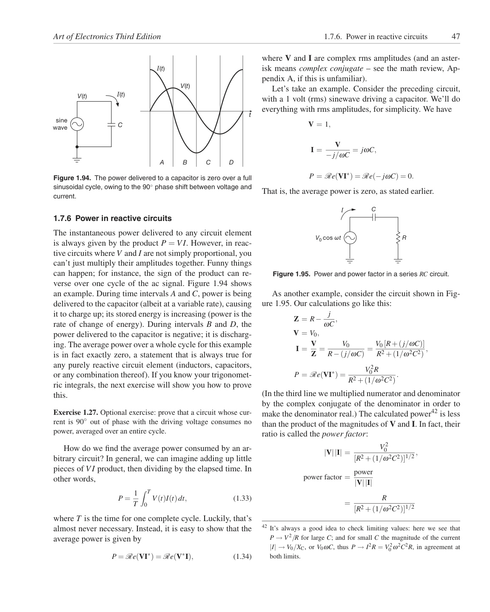

<!doctype html>
<html lang="en"><head><meta charset="utf-8"><meta name="viewport" content="width=device-width,initial-scale=1">
<title>Page 47 of 70</title><meta name="source-page" content="47"><link rel="stylesheet" href="../styles.css">
<link rel="prev" href="page-046.html"><link rel="next" href="page-048.html"></head><body>
<header><div><a class="back" href="../index.html">All pages</a> <span class="meta">Source page 47 / 70</span></div>
<nav class="nav" aria-label="Page navigation"><a href="page-046.html">Previous</a><a href="page-048.html">Next</a></nav></header>
<main><h1 class="meta">Page 47</h1><figure class="sheet"></figure>
<details class="transcript" open><summary>Fetchable text — page 47</summary><div class="text"><p>Art of Electronics Third Edition
1.7.6. Power in reactive circuits
47</p><p>I(t)</p><p>where V and I are complex rms amplitudes (and an asterisk means complex conjugate – see the math review, Appendix A, if this is unfamiliar).</p><p>V(t)</p><p>I(t)</p><p>V(t)</p><p>Let’s take an example. Consider the preceding circuit,
with a 1 volt (rms) sinewave driving a capacitor. We’ll do
everything with rms amplitudes, for simplicity. We have</p><p>t</p><p>C</p><p>V = 1,</p><p>sine
wave</p><p>I =
V
−j/ωC = jωC,</p><p>C
D
A
B</p><p>P = Re(VI∗) = Re(−jωC) = 0.</p><p>That is, the average power is zero, as stated earlier.</p><p>Figure 1.94. The power delivered to a capacitor is zero over a full
sinusoidal cycle, owing to the 90◦phase shift between voltage and
current.</p><p>C</p><p>I</p><p>1.7.6 Power in reactive circuits</p><p>R</p><p>V0 cos ωt</p><p>Figure 1.95. Power and power factor in a series RC circuit.</p><p>As another example, consider the circuit shown in Figure 1.95. Our calculations go like this:</p><p>Z = R−
j
ωC ,</p><p>V = V0,</p><p>I = V</p><p>Z =
V0
R−(j/ωC) = V0 [R+(j/ωC)]</p><p>R2 +(1/ω2C2) ,</p><p>P = Re(VI∗) =
V 2</p><p>0 R
R2 +(1/ω2C2).</p><p>The instantaneous power delivered to any circuit element
is always given by the product P = VI. However, in reactive circuits where V and I are not simply proportional, you
can’t just multiply their amplitudes together. Funny things
can happen; for instance, the sign of the product can reverse over one cycle of the ac signal. Figure 1.94 shows
an example. During time intervals A and C, power is being
delivered to the capacitor (albeit at a variable rate), causing
it to charge up; its stored energy is increasing (power is the
rate of change of energy). During intervals B and D, the
power delivered to the capacitor is negative; it is discharging. The average power over a whole cycle for this example
is in fact exactly zero, a statement that is always true for
any purely reactive circuit element (inductors, capacitors,
or any combination thereof). If you know your trigonometric integrals, the next exercise will show you how to prove
this.</p><p>Exercise 1.27. Optional exercise: prove that a circuit whose current is 90◦out of phase with the driving voltage consumes no
power, averaged over an entire cycle.</p><p>(In the third line we multiplied numerator and denominator
by the complex conjugate of the denominator in order to
make the denominator real.) The calculated power42 is less
than the product of the magnitudes of V and I. In fact, their
ratio is called the power factor:</p><p>|V||I| =
V 2</p><p>0
[R2 +(1/ω2C2)]1/2 ,</p><p>power factor = power</p><p>How do we find the average power consumed by an arbitrary circuit? In general, we can imagine adding up little
pieces of VI product, then dividing by the elapsed time. In
other words,</p><p>|V||I|</p><p> T</p><p>P = 1</p><p>T</p><p>0 V(t)I(t)dt,
(1.33)</p><p>=
R
[R2 +(1/ω2C2)]1/2</p><p>where T is the time for one complete cycle. Luckily, that’s
almost never necessary. Instead, it is easy to show that the
average power is given by</p><p>42 It’s always a good idea to check limiting values: here we see that
P →V 2/R for large C; and for small C the magnitude of the current
|I| →V0/XC, or V0ωC, thus P →I2R = V 2</p><p>0 ω2C2R, in agreement at
both limits.</p><p>P = Re(VI∗) = Re(V∗I),
(1.34)</p></div></details></main>
<footer>Visual layout, figures, tables, equations, footnotes, and original printed page number are preserved in the lossless page image. <a href="../text/page-047.txt">Plain text</a> · <a href="../data/page-047.json">JSON</a></footer>
</body></html>